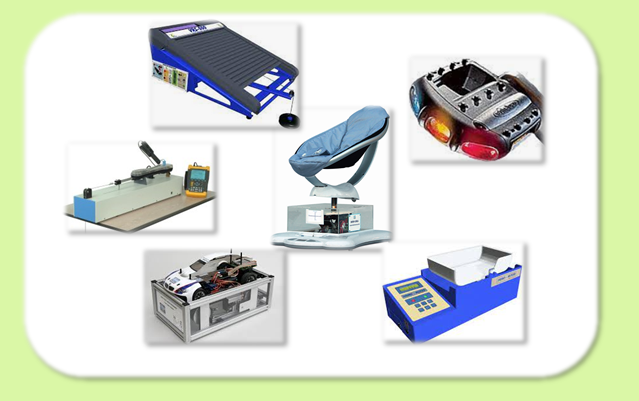
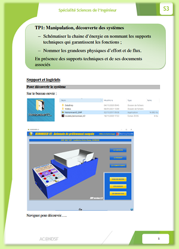
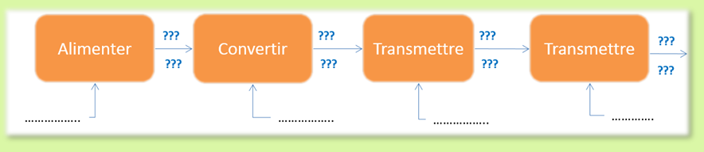

TP1 : Compléter une chaine d'énergie
Objectif : Manipulation, découverte des systèmes

En présence des supports techniques du laboratoire et de leurs documents associés

- Schématiser la chaine d’énergie en nommant les supports techniques qui garantissent les fonctions;
- Nommer les grandeurs physiques d’effort et de flux.

Documents associés
RETOUR à la page Activités